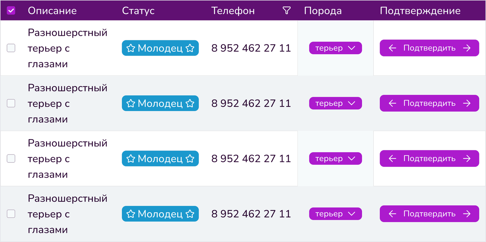
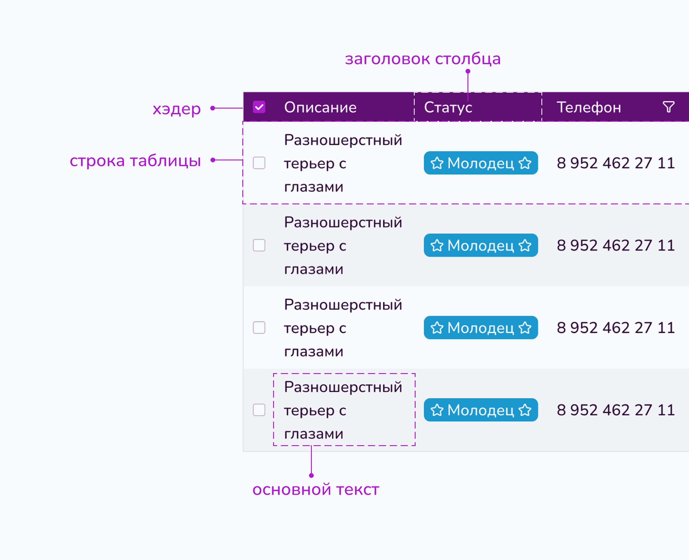

<body>
<pre><code class="language-html">...</code></pre>
</body>Таблицы
Таблицы используются для упорядочивания данных.
Анатомия
Спецификация
Заголовок
На заголовки распространяются рекомендации Заголовков, однако максимальная длина ограничена 150px.
Текстовый
Стандартный текстовый заголовок.
С иконкой
Заголовок с иконкой всегда предпочтительнее заголовка без неё (в целях облегчения считываемости). Иконки слева используются для указания типа данных (телефон, адрес) или их формата (числовой, буквенный). Иконка справа — это всегда кнопка-действие (например, фильтрация).
С чекбоксом
Заголовок может быть чекбоксом с label или без него. В таком случае все поля под этим заголовком тоже снабжены чекбоксом. По нажатию на чекбокс выделяются все чекбоксы ячеек содержания под ним. При деактивации одного из чекбоксов содержания чекбокс заголовка также деактивируется. Под чекбоксом без label могут быть только чекбосксы без label.
Содержание
Максимальная длина ограничена 150px.
Текстовый
Стандартная текстовая ячейка.
С иконкой
Ячейки с иконкой всегда предпочтительнее ячейки без неё (в целях облегчения считываемости). Используются только иконки слева для указания типа данных (телефон, адрес) или их формата (числовой, буквенный).
С чекбоксом
Ячейка может быть чекбоксом с label или без него.
Ячейка с label всегда находится под заголовком с чекбоксом с label. Ячейка без label всегда в начале строки, при нажатии на неё выделяется вся строка.
С кнопкой
Используются, когда пользователю необходимо совершить действие в таблице, например, подтвердить свое участие. Рекомендуется располагать в конце строки.
С бейджем
Используются для разделения строк по определенному свойству.
С чипами
Используются как текстовые ячейки, но с большей видимостью.
Оформление
Для облегчения считываемости используется чересполосица по строкам в порядке: light, gray3.
.punctuation { color: black;}
.bracket { color: blue;}
.css .property { color:22px;}
.css .numerical { color:seagreen;}
.css .letter { color:cornflowerblue;}